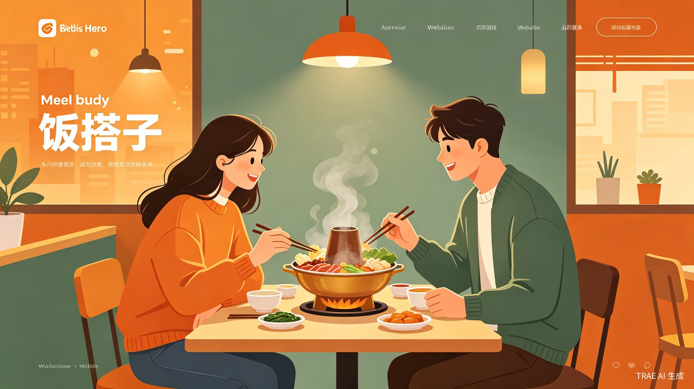

基于 AI 口味匹配的智能饭友社交平台 — 让每一顿饭，都有人分享。

一个人吃饭，是自由，也是孤单。「饭搭子」想给每一种口味找到同好。
饭搭子 — 这个名字来自年轻人中已经流行的社交用语。"搭子"意味着一种比朋友更轻、比陌生人更近的关系，而"饭"就是连接这种关系最自然的纽带。我们不需要刻意找话题，不需要精心准备，只需要在饭点打开小程序，就能遇见一个口味相投的人，一起吃完一顿饭。
这是一个AI 驱动的智能饭友匹配平台，以微信小程序为载体，围绕"约饭"这一高频、低门槛的社交场景，通过口味偏好算法（菜系偏好、辣度接受度、价位区间、用餐时段等）和地理位置实时匹配，让用户找到此时此刻最适合一起吃饭的人。
不同于传统社交软件的"先聊天、再见面"模式，饭搭子围绕"先吃饭、再交朋友"的核心理念设计，降低社交压力，回归吃饭本身带来的快乐。用户不需要上传精修照片、不需要写长篇自我介绍，只需要回答几个关于"吃什么"的问题，即可开启约饭之旅。
当代年轻人的"一人食"困境，远比想象的普遍。
一个人面对外卖列表翻半小时，不知道吃什么、不敢尝试新餐厅。
想吃火锅、烤肉、大份菜，一个人点不了几样，人均成本高且浪费。
吃饭不再是分享体验的过程，美食的快乐少了最重要的"有人一起说好吃"的部分。
更深层的痛点是：现有的社交产品无法满足"轻社交、重场景"的需求。相亲交友 App 目的性过强，让人望而却步；微信群聊又需要先有社交关系才能加入。年轻人需要一个纯粹围绕"一起吃顿饭"的产品，不需要预设社交目的，不需要应付冗长的聊天过程。吃饭就是吃饭，能吃到一起，自然就能聊到一起。
灵感来自日常生活中的真实场景。
"周末想吃火锅，但一个人点不了鸳鸯锅，也吃不完三盘肉。" — 这是团队创始成员的真实经历，也是无数年轻人的日常困扰。
灵感来源于两个观察：第一，"饭搭子"话题在小红书、微博、豆瓣等平台持续火爆，累计阅读量超数十亿次，年轻人的"找饭友"需求真实且强烈；第二，现有产品对这一需求的满足方式极其原始 — 靠发帖、建群、手动筛选，效率低下且体验割裂。
与此同时，AI 技术已经成熟到可以精准理解用户的饮食偏好，LBS 定位让"附近的人"匹配成为可能，而微信小程序的轻量特性让"打开即用"变成了现实。这三个技术趋势的交汇，让"饭搭子"从想法变成了可落地的产品方案。
轻量、即时、低门槛的约饭工具。
「饭搭子」是一款基于微信生态的智能约饭小程序。用户无需下载额外 App，扫码或搜索即可使用。核心使用流程如下：
新用户完成一份简短的口味测试（菜系偏好、辣度等级、价位区间、用餐时段等），系统生成个人口味标签。
在用餐时段（午餐 11:00–13:30 / 晚餐 17:00–20:30），系统根据口味相似度和距离推荐匹配度最高的饭友。
双方确认意向后进入"约饭卡片"界面，可选择附近餐厅或自定义地点，确认后即可见面用餐。
用餐后双方可互评，积累信用分和口味标签，提升后续匹配精度。支持"饭友"关系沉淀，以后可再次约饭。
独特价值：不要求上传真人照片（可选匿名头像），不要求文字聊天开场（直接约饭即可），不要求长期社交关系维护 — 纯粹的"吃一顿饭"体验。AI 引擎会持续学习用户的评价反馈，让匹配越来越准。
围绕"约饭"场景设计的功能矩阵。
基于用户的评分与反馈持续优化偏好模型，实现"越用越准"的匹配体验。
地图模式展示周围正在找饭友的用户和热门约饭餐厅，发现身边的同好。
根据双方口味推荐适合的餐厅，支持"双人套餐拼单"功能，降低用餐成本。
支持提前预约周末或特定日期的饭局，更适合聚餐场景（火锅、烤肉等）。
可选全匿名匹配，用 AI 生成的头像和昵称替代真实信息，降低心理门槛。
实名认证 + 芝麻信用接入 + 用户互评机制，有效过滤不良行为，保障线下约饭安全。
为"吃"服务，离钱最近的生活赛道之一。
饭搭子天然具备清晰的商业路径。作为连接"人"与"餐"的平台，可以从三个维度实现价值闭环：
餐饮商家侧 — 为合作餐厅导流，按到店消费抽佣；提供"搭子专属套餐"和拼团优惠，提升客单价和翻台率。餐厅可通过平台发布"饭友召集令"，吸引新客到店。
用户侧 — 基础匹配服务免费，增值功能（优先匹配、高级口味分析、餐厅预订折扣等）通过会员订阅实现收入。
数据侧 — 积累的城市餐饮偏好数据和用户口味画像，可为餐饮品牌提供消费趋势洞察报告，实现 B 端数据服务收入。
在 TRAE AI 平台的赋能下，从 MVP 原型开发到上线测试，整个周期可以压缩在 4–6 周内完成。